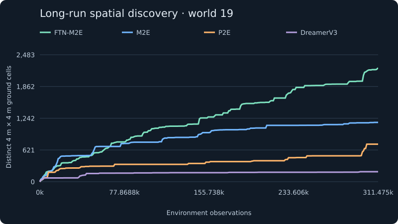
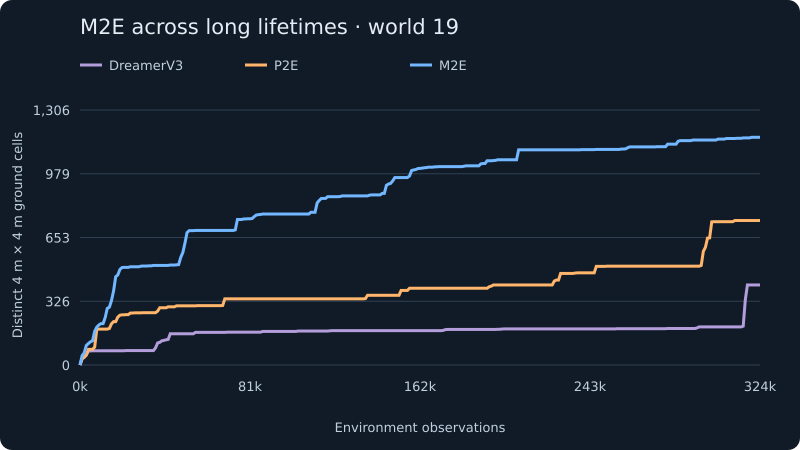
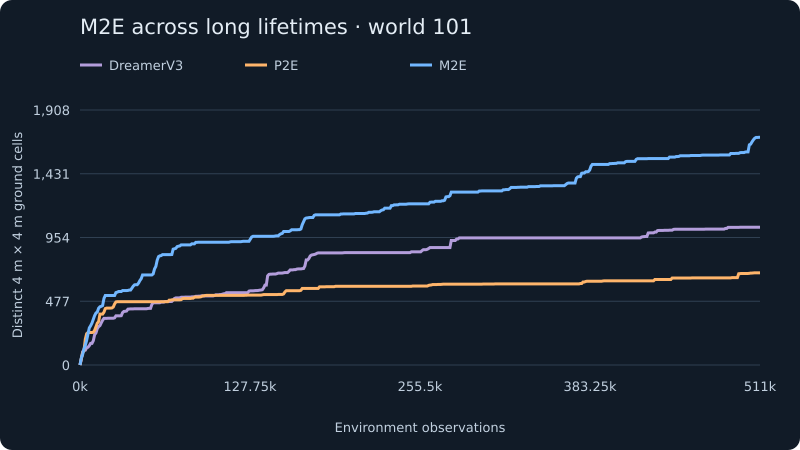
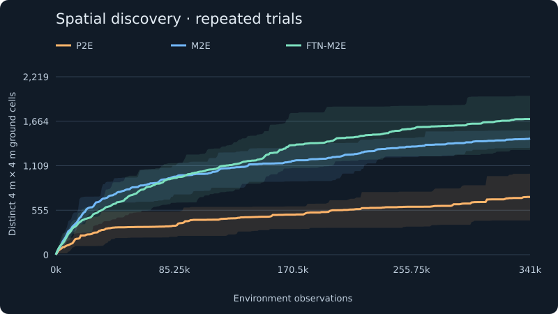
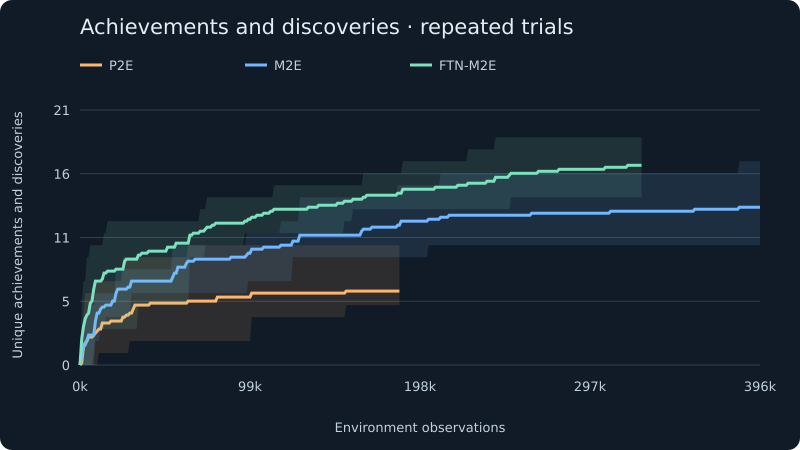
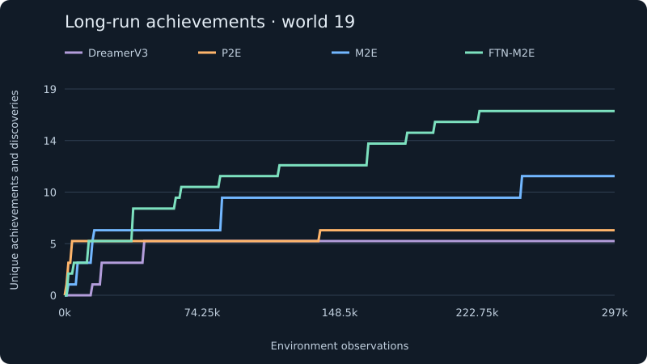
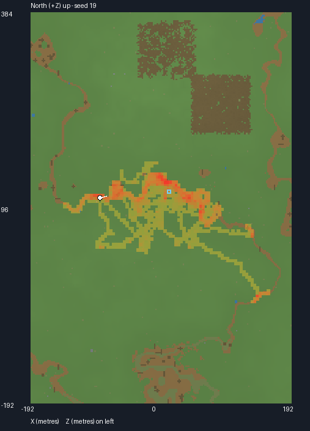
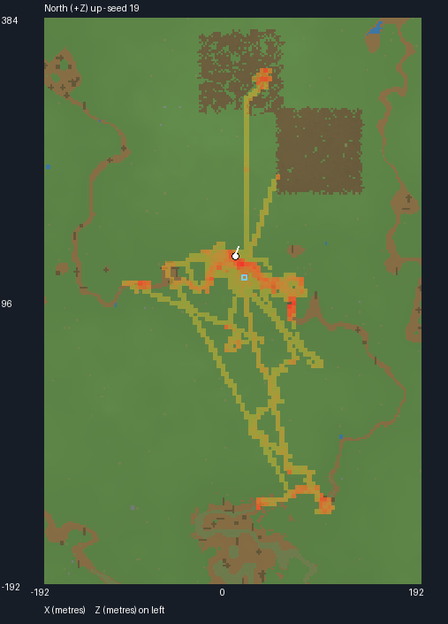
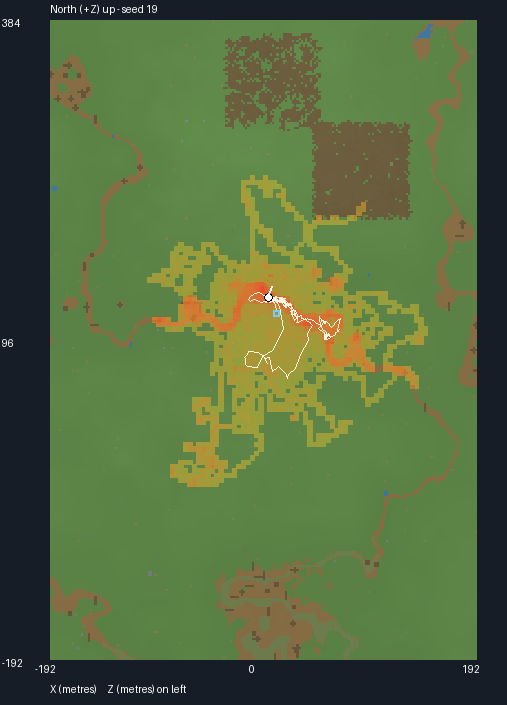
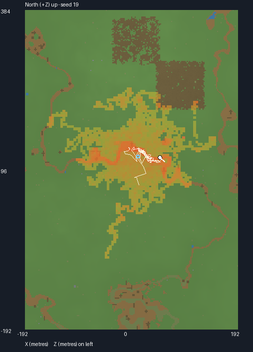

Exploring the world of Globo
Exploring widely is one kind of progress. Discovering a growing range of things to do is another. M2E and FTN-M2E show both in Globo.
Globo is an open world of forests, cliffs, wildlife, and hazards. These agents receive no destinations or survival rewards: their drive is to discover unfamiliar experience. We compare DreamerV3, Plan2Explore (P2E), Metalearning2Explore (M2E), and FTN-M2E, which adds continual learning through neural assemblies to M2E.
Exploration that keeps growing
Preliminary long runs show M2E and FTN-M2E exploring far beyond the model-based baselines. In the headline seed-19 run, FTN-M2E pulls well ahead later in the lifetime. Its added continual learning capacity is a plausible explanation: earlier behaviors can be retained and recombined as new situations appear.

M2E’s advantage also appears in the earlier comparisons on two different worlds. Memory-density feedback gives it an immediate sense of what is familiar, while its learned exploration policy improves how it reaches unfamiliar observations.


To determine the reliability of these results, I ran six learner seeds each for M2E and FTN-M2E in Phase 4, compared with the first six Plan2Explore runs in Phase 5. These longer repeated trials show how exploration develops over hundreds of thousands of observations.
FTN-M2E pulls ahead later in spatial exploration and accumulates more distinct achievements. Both M2E and FTN-M2E outperform P2E. The curves retain the full set of runs for each method throughout their displayed duration.


World seed 19: six learner seeds each for M2E and FTN-M2E from Phase 4 only; six matched learner seeds for P2E from Phase 5 (runs 1–6). Each mean and full-range band stops at the shortest run for that model: FTN-M2E at 327,000 observations, M2E at 396,000, and P2E at 186,000. The shared axis extends to 396,000. Multi-run charts updated October 16, 2026.
The detailed long-run comparison shows the same achievement advantage: FTN-M2E collects the broadest repertoire. Counting distinct discoveries captures progress that a ground-coverage score alone misses—new resources, new biomes, climbing, and interactions with the world.

| DreamerV35 achievements | P2E6 achievements | M2E11 achievements | FTN-M2E17 achievements |
|---|---|---|---|
|
|
|
|
Across the short-run averages and this long-run comparison, FTN-M2E earns the most achievements. The result suggests that continual learning can broaden what an explorer learns to do, even before it produces the widest spatial coverage.
What does the exploration progress of each agent actually look like? M2E and FTN-M2E spread through the landscape more broadly and robustly. In these long-run maps, DreamerV3 and P2E appear to spend much of their time trapped in trenches; when they escape, their paths often follow a narrow direction across the landscape. M2E and FTN-M2E also find routes into the dense forest, which the model-based baselines largely miss. These are visible patterns in the recorded trajectories, rather than a separate behavioral score.
World 19




Maps share terrain, bounds, and visit-intensity scale within each world. Yellow–red marks repeated visits; the blue square marks spawn and the white line the recent path. These are final recorded maps at the labeled run lengths. Click to enlarge.